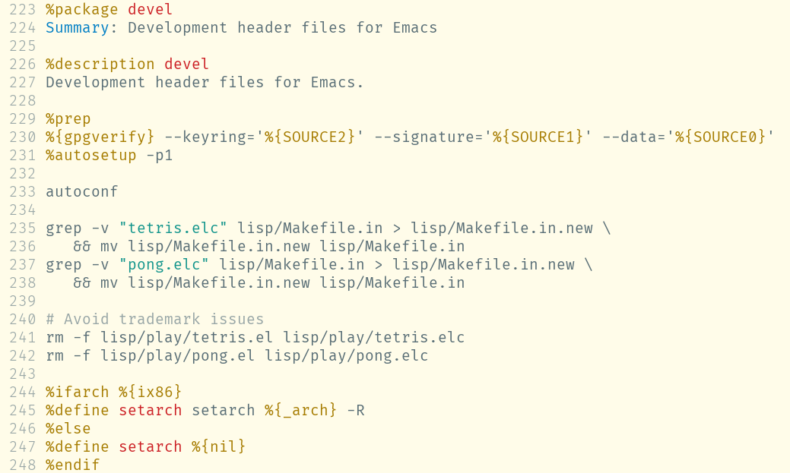
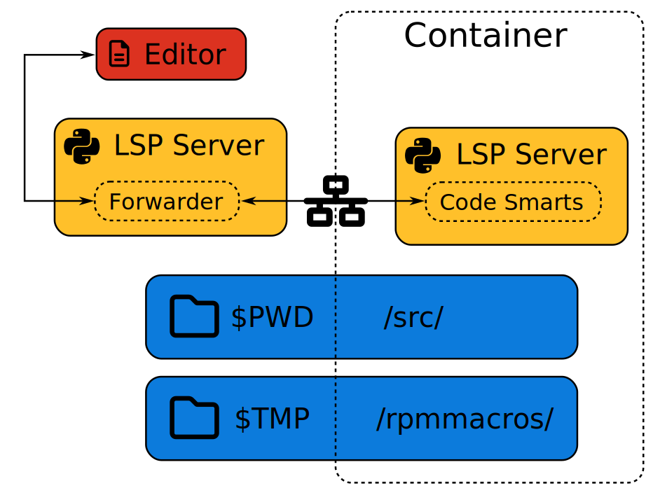

Dan Čermák
Dan Čermák
| Software Developer @SUSE, SLE BCI releng | |
| i3 SIG, Package maintainer | |
| Developer Tools, Testing and Documentation, Home Automation | |
| https://dancermak.name | |
| dcermak | |
| @Defolos@mastodon.social |
with a Language Server:

specfile wraps rpm -E %_dump and rpm -E $macrospecfile gives you origin of a macro%_rpmmacrosdirProvides: rpm_macro($name)
Answers!